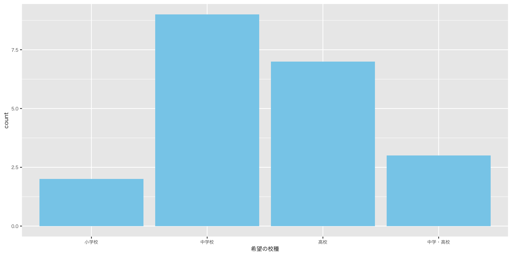
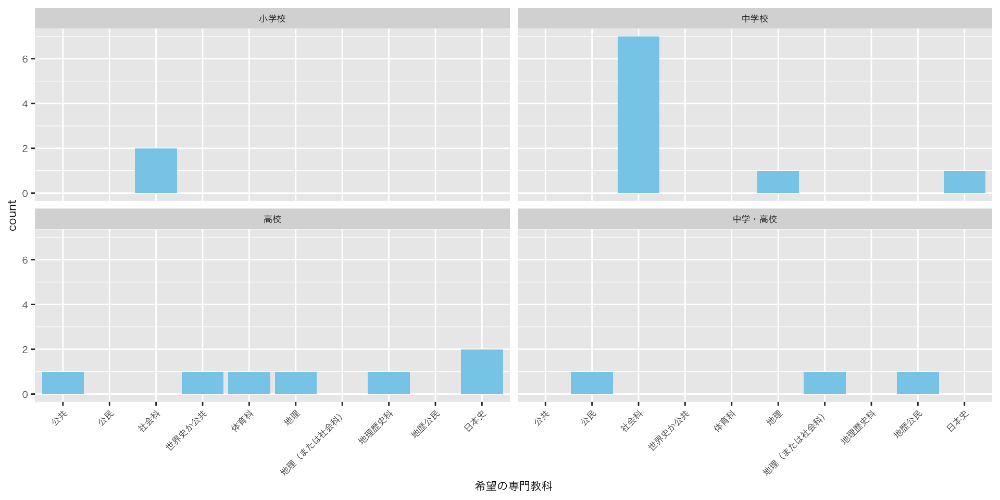
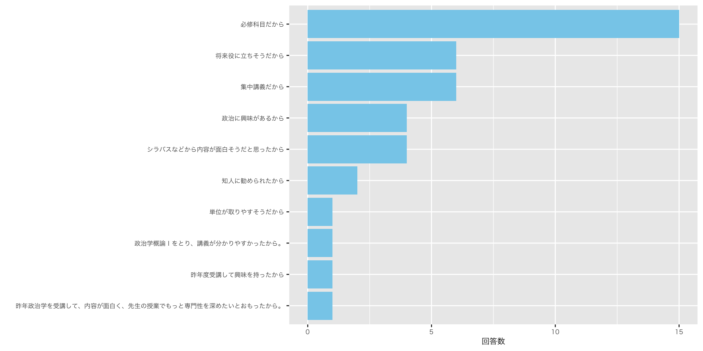
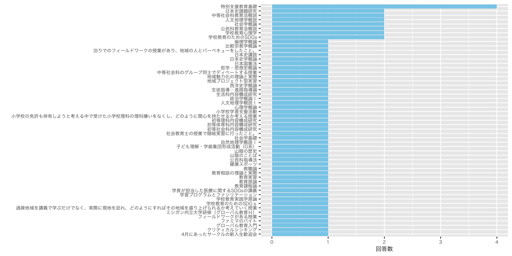
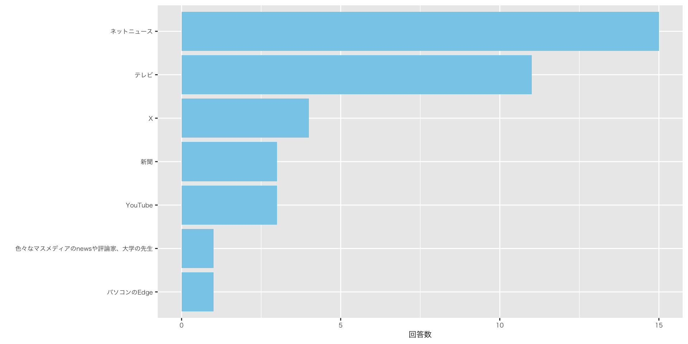

![]()
| 最近､気になったニュース |
|---|
| 韓国の戒厳令 減税(基礎控除引き上げ、ガソリン税等々)先延ばし 財務省への批判が増大 |
| 「103万の壁」の引き上げについて、島根原発2号機再稼働、今季の雪情報 |
| 中山美穂がヒートショックで亡くなったこと。風邪が5類感染症になること。103万の壁が変わるかもしれないこと。 |
| 風邪が５類感染症になること。 |
| ヴィッセル神戸がJ1優勝、玉木議員が不倫、今年「ガキ使」復活かも |
| 紅白歌合戦の話題（西野カナが復帰後初テレビ歌唱）、同性婚を認めないのが違憲とされた3例目、ゴンチャ働き方改革 |
| 123万円案 悠仁さまの大学推薦 ドン･ファンの元妻無罪判決 |
| 韓国の大統領の問題、103万の壁の問題、島根原子力発電所の問題 |
| 島根原発が再開したニュース 103万円の壁のニュース 中山美穂が亡くなったニュース |
| 岡田将生の結婚、総理の交代、槙野智章の引退試合 |
| アメリカの大統領選挙、韓国の戒厳令、「103万の壁」について |
| ・フランスの首相が退陣＆就任 ・新語流行語大賞が「ふてほど」 ・韓国での戒厳令 |
| ・韓国のユン大統領に関するニュース ・アサド政権崩壊 ・ドラマ「ドクターX」がファイナルを迎えたこと。 |
| 韓国で起きた戒厳令 石破総理の居眠り プロ野球のNPBと労働組合の選手の待遇に関する会議 |
| 北九州のマクドナルドで中学生の男女が刺された事件 箱根駅伝に関するチーム密着のニュース 選抜21世紀枠候補で壱岐高校と大田高校が最終候補に残ったニュース |
| 中山美穂死亡 悠仁さま筑波大学合格 尹大統領の戒厳令発令 |
| 石破当選 岡田将生の結婚 大谷翔平の活躍について |
| 韓国の戒厳令 日本の内閣支持率 バスケットボールで富士通が皇后杯決勝に進出 |
| ・北海道・江別大学生暴行死事件 ・留萌の高校生殺害事件 ・「悠仁さま」筑波大合格 |
| 北九州のマクドナルドで中学生が刺された事件のニュース、元検事正の性的暴行の裁判のニュース、Ｊリーグの来季の日程が決まったニュース |
| 韓国の戒厳令、103万円の壁について、太平洋側の乾燥による火事の多発 |
政治学概論Ⅱ ＃2 国際政治学（1）
グローバルイシュー①難民問題②公衆衛生
2024年12月19日
授業の感想
授業の感想
「出羽守」と「尾張守」論法
単に海外と言っても色々な国があるのにも関わらず、私たちは海外と日本というように二項対立的に捉えやすくなっているのではないかと考えた。たとえば、自分以外の人も同じ考えを持っていると他者に主張したいとき、「みんなも同じことを思っています」といったことを言った経験が何度かあったのではないかと振り返る。また、教科書のなかで「私たち」といった記述がみられるが、どこまでを私たちに含めて考えればいいか文脈を判断して教科書を読む必要がある。このように包括的な言葉は使い方、解釈の仕方ともに考えていくことが重要であると考えた（田辺）。
SNSの愛国者
確かに、個人的にもネットは偏った意見やデマも多くあると思う。しかし、最近のマスメディアも偏った意見やデマが多いと感じる。特に、アメリカ大統領選における、異常なハリス推しや国民民主党の政策に対するバッシングの嵐、韓国の危機を伝える遅さ、被害者や有名人のプライバシーをフル無視の取材、ファクトチェックもしないで情報を流し外交が危うくなると言う、かなりひどい状態だと思ったので（片山）。
授業の感想
世界価値観調査
政治への関心が高い人は低収入の人や高収入の人に多いと考えていて、収入が低い人は社会保障に関する政策等が気になり、逆に高い人は所得税などの政策が気になるのではないかと今まで考えていた。しかし実際は特に大きな差があるわけではなく全体的に関心を持っている人が多いと感じた。しかし私は政治にあまり民意が反映されていないのではないかと感じているため、政治に対して関心を持ってくれている国民が多いのにもかかわらずなぜあまり民意が反映されないのかと疑問に感じた（松本）。
ドイツの高収入であるほど政治について話す機会が多いのがなぜなのか疑問に思ったため選んだ（藤井）。
データの重要性
データに関してはいくつか作ったことはあったもののOECDなどの元の情報からデータをとってみるという発想はなく、新たな視点だったから。またデータを作ることが教員としての指導の幅を見ろげられるということを学び、見るだけでなく、作ることも学習の一つということは考えたことがなく、講義を聞く中で意味に共感したから（大石)。
授業の感想
国際政治
国際政治の基本的特徴について３つの特徴を学ぶことができた。その中で、なぜ国際社会が完全な弱肉強食な世界になっていないのかについて考えるところが面白い点だと考えた。国際社会で完全な弱肉強食の世界になっていないのは日本のような平和主義や経済依存を重視する国が存在することで、国際協調やルールを支持していることも協調が生まれる背景に加えて、理由の１つであると講義を受けて、考えた（三島）。
かつてのように牽制しあい勢力均衡によって平和を維持するのではなく、国際機関や国際法などの制度や慣行、大国の利害関係の中で生まれる責任によって国際社会を動かしていること、国際世論によって協調を生んでいることが大切だと感じたから。また、国家利益と国際社会の利益が調和する点を均衡点として目指して外交をしていくことが大切になると感じたから(遠藤)。
初回アンケート集計
Q. 希望の校種
Q. 希望の専門教科
Q. 受講理由
Q. 好きな授業もしくは活動
Q. 好きな授業もしくは活動
政治学概論I
セイジドウラクやアサヒポッドキャストが紹介され、政治が少し身近になったから。また、官僚制度など難しい概念への理解が進んだから（政治学概論I受講生）。
Q. ニュースソース
Q. 最近､気になったニュース
Q. 島根県の好きなところ
| 島根県の好きなところ |
|---|
| 素晴らしい観光スポット(出雲大社、日御碕)が多い。 |
| いい意味で何もないところ（例：旅行などで県外に行った際に楽しめる） |
| 自然が多いところ。 |
| 都会よりも地域内のコミュニティが充実していること。車があれば暮らしやすいところ。 |
| 景色 |
| 自然が豊かなところ、温泉がたくさんあるところ |
| ほどよい田舎で生活するのにはなにも困らないところ。 |
| 落ち着くことのできる場所が多いことや、都会みたいにいつ行っても人がたくさんな場所がないところです。 |
| 人が少ないゆえに、電車などがすいていて基本的には座ることができるところ。 |
| 自然が多いところ。 |
| アクアスがあるところ。 |
| 松江城とその城下町の風情を残すまちの様子 |
| 奥出雲和牛、星がきれいなところ |
| 宍道湖・中海・大橋川・日本海といった日本屈指の水が豊かなところ（釣りが趣味のため）、地方ならではの昔ながらの景観が残っているところ。 |
| 横に長い島根県は、安来から津和野まで、それぞれの地域性があり、歴史的な街並みや観光スポットが存在していること。 |
| 美味しいご飯がいっぱいあるところ。 |
| 暖かい人しかいない |
| 人が優しいところ |
| 桂島 |
| バスケチームの島根スサノオマジックの試合を観戦できること。 |
| 人が優しいところ。 |
リーディングアサインメント
苅谷剛彦「放置された不平等の慣性」
私が面白いと思った箇所は70ページ・71ページの中負担・中支援型へのシフトの部分である。: この部分が印象に残った理由は、長く続いた高負担・低支援型の日本の高等教育が変化の兆しを見せているというところが印象に残ったからだ。選択肢がないようにも思われた教育政策が、近年になってどのように中負担・中支援型へシフトしようとされているか、具体的な政権の動きを知ることができた。また、政権だけが高負担・低支援型で進めているのではなく、私たちの意識の底にもこのような慣性があるということが印象に残った（内坂）。
日本では保守政権が長期におよび、高負担・低支援型しか経験してこなかったことで、教育を通じた機会の平等政策を高等教育では選択しなかったことが現在のシステムの慣性となったということが重要だと思った。（p.68）: 他国と比較して日本の大学では学生の負担が大きく、政府からの財政的な支援が手厚いとは言えないということは聞いたことがあった。これまでは、過去の政治の変遷については触れず、この現状からどのように変えるかを考えるべきであると考えていた。しかし、政党政治の変遷によって作られた歴史があり、高負担・低支援の経験しかしてこなかったことの影響があると知り、もとの考え方や見方を新しくしていく必要があると感じたから（遠藤）。
苅谷剛彦「放置された不平等の慣性」
71ページの「しかし、大学入試での成否は、どれだけ頑張ったかという個人の努力の成果だという見方が日本では依然として強く、ネオリベラリズムの個人化に通じる「自己責任」論と結びつきやすい。」の部分である。: 入試の成否が自己責任論と結びついている点が重要だと思った。例えば、塾に通える子と金銭的な事情で通えない子では、そもそも学力に差が出ると考える。入試が失敗したからと言って、本人が努力していないとは限らない。努力したくてもできない環境などにある場合もあるのではないか。入試や学力は、家庭環境や経済状況にも左右される。記事のような授業料で、金銭的な事情で大学に進学できない人も存在する。だから、入試の失敗は、努力していないわけでもないし、表面ではみえない背景的なことも含んでいる。世間で言われる「親ガチャ」にも関連するのではないか。このように深い意味があることから重要だと思った（加藤）。
国立大学と私立大学の授業料について（66,67ページ）：国立大学の授業料と私立大学の授業料が戦後は1対5であったのに、2000年代に入ると1対1.6とかなり縮まっているため興味深いと感じた。また授業料が縮まった原因としては、受益者負担論や授業料格差是正を求める声に押されたこととされていて、国民の声が届いており、その声にしっかりと応じてそれぞれの授業料が少しずつ変わってきていることが面白いと感じたからである（渡邉）。
グローバル・イシューとグローバル・ガバナンス論
グローバル・ガバナンス論
グローバル・ガバナンスの定義
グローバル・ガバナンス論
グローバル・ガバナンスの難しさ
- 主権国家体制（内政不干渉原則）
- 関係諸国間の利害に濃淡がある
- 原因と結果の因果関係が複雑である
- 効果がすぐに現れにくいことも
- 原因となる国と、結果となる（を被る）国が一致しない
- 市場を制御できない
- 国民的理解を得られにくい
- 多くの場合、税金を国外で使うことに
- 国民は､政府､議会は問題解決に万能であるという幻想を抱きやすい
- できない約束をする「強い」リーダーを歓迎
- ポピュリズム問題（例：ブレグシット）
グローバル・ガバナンス論
グローバル・ガバナンスの難しさ
こうして国家や市場の失敗ないし機能不全の先に、グローバル・ガバナンスの世界は拡がっている。しかし、越境する問題群を誰がどのように制御するのかは必ずしも定かではない。少しでもその世界をのぞきこむと、問題ごとに異なる実に多様な主体が、これも実にさまざまな形で関与しているのがわかるだろう。そこでは問題の制御にある程度成功している場合もあれば、そうでない場合もある。力のある主体がある解を押しつける事例もあれば、同床異夢のなかで多くの主体が協力している事例、はたまたデザインのないまま自然発生的に秩序を形づくっている事例など、現象は多岐にわたる（遠藤乾 (2008), i-ii）
グローバル・イシューへのアプローチ
- 主権国家体制、国際共同体、世界市⺠主義の関与の度合いは、イシューの性格によって異なる
主権国家体制、国際共同体、世界市⺠主義については､後日（対面授業時）に説明します
- グローバル・イシューの決定的な主体：大国（主権国家）
- アメリカ；中国
グローバル・イシューへのアプローチ
⑴ 大国（主権国家）にとって放置できないイシュー
- 特定の大国（主権国家）にとって有利なイシュー
- 例：ワクチン外交
- 米中間の対立 - グローバルサウスの支持獲得競争
- 例：ワクチン外交
- 既存の国際的な枠組み（国際機構や国際条約）がある場合
- ➡ 問題解決に動きやすい
- 例：クロマグロ漁獲枠の是正
- ➡ 問題解決に動きやすい
グローバル・イシューへのアプローチ
⑵ 大国（主権国家）にとって放置可能なイシュー
- 世論（国民的、国際的）がない限り、主権国家は動かず（世論が求めても､主権国家が反応しない可能性は残る）
- 世論は他国の問題に反応しづらい
- 他人事か自分事か（日本はいつまでも経済大国でいられると思っていませんか？？？）
- 世論は（反応したとしても）情緒的に反応しやすく、政府、メディアによって操作されやすい（操作されていることに気づかない）
- 世論には持続力がない
グローバル・イシューへのアプローチ > 事例
現在サラさんは顎などの骨の治療を受けており、他にも呼吸器に問題を抱える家族がいる。今後が見通せない中、シリアに帰郷する望みよりも、ヨーロッパで暮らせる可能性に賭けた。実は昨年（2023年）、ヤーセルさんは単身、トルコ、ロシア、ベラルーシ、そしてポーランドへと、過酷な道のりを経て、今は欧州内で難民として受け入れられることを模索している。（Dialogue for People, 「アサド政権崩壊、シリアの「故郷」を知らない子どもたち、親たちの葛藤」）
The exodus of 2017 won global sympathy. At a un-backed aid conference that year donors pledged $344m for Rohingya refugees. But attention has long since moved on, and the aid is drying up. This year the World Food Programme (wfp) has cut rations for each Kutupalong inhabitant from a value of $12 a month to $10, then $8, citing a funding gap of $56m. Even before the cuts, two-fifths of camp children showed signs of stunted growth; now malnutrition is rising fast. (The Economist, ‘Rohingya refugees return to the sea’)
グローバル・イシューへのアプローチ > 事例
The war in Sudan has received a fraction of the attention given to Gaza and Ukraine. Yet it threatens to be deadlier than either conflict. Africa’s third-largest country is ablaze. Its capital city has been razed, perhaps 150,000 people have been slaughtered and bodies are piling up in makeshift cemeteries visible from space. More than 10m people, a fifth of the population, have been forced to flee from their homes. A famine looms that could be deadlier than Ethiopia’s in the 1980s: some estimate that 2.5m civilians could die by the end of the year. (The Economist, ‘Why Sudan’s catastrophic’)
グローバル・イシューへのアプローチ > 事例
They are likely to be disappointed. Germany’s nearly 1m Syrians are its third-biggest minority after Turks and Ukrainians. Almost a decade after the 2015-16 influx, many have put down roots. The employment rate for Syrians in Germany is higher than in most other eu countries, and growing quickly, in industries from health care to transport. Nearly 200,000 Syrian children are in German schools, many of them born in Germany or too young to recall anywhere else. Tens of thousands more are in vocational training or at university. (The Economist, ‘Syrian refugees in Europe are not about to flock home’)
データ
- 放置されるグローバル・イシュー
- SDG Tracker
グローバル・イシュー①：難民問題
動画で考える難民問題
難民問題の複雑性
- 国境管理・入出国管理
- 領域主権国家の管轄事項
- 主権国家の保護を受けられない難民保護の責任はどこに？
- 「世界市民主義」の関心ではあっても、「主権国家体制」の関心にはなりにくい
- 主権国家ないし国民国家の利害との衝突
- 例外としてのメルケル首相のシリア難民の受け入れ措置
今、多くの難民の流入と社会への統合がもたらす大変な課題に正しい方法で取り組めば、我々にとってあすのチャンスになると確信している
我々が試練の時を生きていることは事実だ。しかし、我々がそれに対応できることもまた事実だ。なぜならドイツは強い国だからだ
- 大きな反発､極右の台頭を招く
- 主権国家ないし国民国家の利害との衝突
- 「世界市民主義」の関心ではあっても、「主権国家体制」の関心にはなりにくい
難民問題の複雑性
【ベルリン＝宮下日出男】ドイツ東部ケムニッツで移民排斥を主張する極右支持者らのデモが激化している。移民によるドイツ人男性の殺害事件が発端で、「反極右」を訴えて対抗するデモとも衝突した。メルケル首相が難民・移民受け入れで象徴的な決断を下して４日で３年。移民流入は減ったが、社会の緊張が改めて浮き彫りになった。
- 出典：『産経新聞』（ドイツ東部で極右デモ激化 移民めぐる緊張浮き彫り メルケル首相決断から3年）
日本は難民鎖国？：難民の権利と難民認定制度
⑴ 何が問題か？1
- 近年の事件：シリア人難民
- EU、シリア人難民を12万人受け入れ
- Cf. 日本（2014年）：11人（申請数5,000人）
- 難民認定率：0.2%
- Cf. 国際社会全体の平均難民認定率27%
- ➡ 「難民鎖国」と呼ばれる所以
- 難民認定率：0.2%
- Cf. 日本（2014年）：11人（申請数5,000人）
- EU、シリア人難民を12万人受け入れ
- 日本は難民鎖国なのか？
日本は難民鎖国？ > 日本は難民鎖国なのか？
Yucel Mehmet, a Kurdish man who lives near Tokyo, is glad Ukrainians are welcome, “but I can’t help wishing they accepted even just ten Kurdish refugees.” Of some 2,000 Kurds living in Japan, only one has won refugee status. (The Economist, Japan is making asylum even harder for refugees)
カトリック教会の助祭でもある長沢さんはつぶやいた。日本で難民申請が認められるのはきわめてまれだ。会の支援を受ける人たちの大半も難民と認められず、在留資格を失っている。そのため、働くことも生活保護を受けることもできず、健康保険もない。 昨年度、同会は約300人に計約1500万円を援助した。収入のほとんどは市民からの寄付だ。「見捨てられた人たちに心を砕いている、善意の人たちがまだ日本にこれだけいる」（『朝日新聞』「世界で急増する難民申請者 欧州を悩ますコスト、日本は予算乏しく」
日本は難民鎖国？ > 国際法における難民保護
難民条約と難民の定義
国際社会における難民支援
- 「難民の地位に関する条約」（難民条約）1951年採択
- 国連難民高等弁務官事務所（UNHCR）
- 1950年に設立
- 援助対象者：6390万人（2015年末）
難民の定義
1951年1月1日前に生じた事件の結果として、かつ、人種、宗教、国籍若しくは特定の社会的集団の構成員であること又は政治的意見を理由に迫害を受けるおそれがあるという十分に理由のある恐怖を有するために、国籍国の外にいる者であって、その国籍国の保護を受けることができない者又はそのような恐怖を有するためにその国籍国の保護を受けることを望まない者
日本は難民鎖国？ > 国際法における難民保護
- 「条約難民」（条約に基づく、狭義の難民を指す）
- 1967年、冒頭の時間的制約を撤廃
- 条約の対象外となる者
- 自然災害；戦争；内戦；大規模な人権侵害を理由として国外に逃れる者（「流民」）
- 貧困などの経済的理由により国外に逃れる者（「経済難民」）
- UNHCR、条約難民だけでなく、流民、経済難民へと援助拡大
- 自然災害；戦争；内戦；大規模な人権侵害を理由として国外に逃れる者（「流民」）
日本は難民鎖国？ > 国際法における難民保護
b. 難民に対する保護
- 難民条約締結国の義務
- 難民条約、難民の受け入れを締結国に義務づけず
- 国家の出入国管理は、**各国の領域主権*
- 自国領域内の合法的難民を追放してはならない義務を負う（ノン・ルフールマン原則）
- 裁判を受ける権利；初等教育、労働及び社会保障に関する権利；結社、職業、住居に関する権利
- 難民条約、難民の受け入れを締結国に義務づけず
日本は難民鎖国？ > 日本の難民受け入れ体制
日本の難民受け入れ体制
- 難民認定手続
- 日本、難民条約締結（1982年）
- 出入国管理及び難民認定法（入管法）（1982年、施行）
- 法務省入国管理局への難民認定申請
- 合法か非合法かは問われない
- 期限制限なし
- 繰り返し申請可能
- 法務大臣による認定
- 「事実の当てはめ行為」
- 条約に規定された難民としての要件を満たすかどうか
- 難民認定者：在留資格を付与
- 難民非認定者：7日以内に意義申立て可能
- 異議申し立て棄却の場合、行政訴訟による審査可能
- 「事実の当てはめ行為」
- 法務省入国管理局への難民認定申請
日本は難民鎖国？ > 日本の難民受け入れ体制
- 日本の難民認定者が少ない理由
- 難民認定審査の厳しさ
- 要件：「迫害を受けるおそれ」
- 難民認定審査の厳しさ
通常人において受忍し得ない苦痛をもたらす攻撃ないし圧迫であって、生命又は身体の自由の侵害又は抑圧
- Cf. UNHCR：「その他の人権の重大な侵害」を迫害の構成要件とする
日本は難民鎖国？ > 日本の難民受け入れ体制
- 申請：
- 「合理的な疑いを受れない程度の証明」を要する
- 裏付けとなる証拠を要するも、難民は証拠となるものを持たないことが多い
- Cf. UNHCR：「灰色の利益論」
- ごく少数の必需品しかもたないことを前提に、その供述の信憑性が認められる場合は、申請者の利益にかなうように解釈すべし
- ➡ 日本、この原則を受け入れず
- 裏付けとなる証拠を要するも、難民は証拠となるものを持たないことが多い
- 「合理的な疑いを受れない程度の証明」を要する
- 難民認定申請者の「質」
- 欧州諸国：シリア；アルバニア；コソボ；アフガニスタン；イラク（2015年、ドイツの事例）
- 日本：ネパール；インドネシア；トルコ；ミャンマー；ベトナム
- ビザ緩和（観光ビザによる入国＝正規滞在）と、6ヶ月経過後は就労可能＝偽装申請
- シリア紛争を理由とする申請は、すべて難民と認める
日本は難民鎖国？ > まとめ
まとめ
- 政府：受け入れは各国の裁量
- 市民：難民を受け入れるべき
- 難民条約に難民認定方法に関する規定なし
- 国際法上、問題とならない
- 認定者数や申請手続きの厳しさのみを理由に、「難民鎖国」と結論づけるべきではない
- 地政学的要因を考慮すべき
- 灰色の利益を認める傾向にあり；新しい形態の迫害を追加
世界の難民問題 > 難民審査の外部展開1
⑴ 難民審査の外部展開
- 庇護希望者の領域外収容
- 国際空港の一部に特殊な法的地位を与え、難民申請する権利を制限、ノン・ルフールマン原則を適用しないようにする
- Cf. スピルバーグ監督『ザ・ターミナル』
- 映画のモデル：イラン人マーハン・カリミ・ナセリ
- シャルル・ドゴール空港で19年間生活する
- 映画のモデル：イラン人マーハン・カリミ・ナセリ
- アメリカ、グアンタナモ基地
- キューバ領を租借、主権はキューバにあり
- ノン・ルフールマン原則を適用せず
- キューバ領を租借、主権はキューバにあり
- 緩衝地帯の設置
- 西欧諸国、「安全地域」として、バルカン諸国やトルコを指定。この地域から到着した難民認定希望者の申請を受理せず
世界の難民問題 > 途上国に滞留する難民
⑵ 途上国に滞留する難民
- 大多数の難民
- 出身国に隣接する貧しい開発途上国の難民キャンプで生活
- 世界最大の難民キャンプ：ケニア、ダダーブDadaab難民キャンプ
- ソマリア内戦からの難民9万人を収容
- 50万人が居住（2016年）
- ケニア、ナイロビ、モンバザに次ぐ規模
- 管理者：UNHCR（予算面）
- 実力組織：ケニア政府警察
- 代表者：難民間の民主的選挙
- 都市機能の発展
- 闇市の発生；病院；学校；映画館；サッカーリーグ
- ➡ 難民コミュニティの拡大再生産（田所 2018: 119-120）
- 誘拐；テロ攻撃の可能性
グローバル・イシュー②：公衆衛生問題
公衆衛生問題 > 詫摩「公衆衛生と安全保障」
詫摩佳代（2020）「公衆衛生と安全保障」（SYNODOS）
- 感染症
- 公衆衛生問題
- 安全保障
- 概念：「人間の安全保障」概念
- 国連開発計画（UNDP）の『人間開発報告』（1994年）
- 国連ミレニアム総会（2000年）
- 事件：エイズの流行
- → サミットで議題に
- 概念：「人間の安全保障」概念
- 国際機関の中立性問題
トランプ米大統領は、世界保健機関(WHO)が「あまりにも 政治的で、中国寄りである」と批判、5月末には「WHOとの関係を終わ らせる」と発言した（詫摩佳代 (2020)）
公衆衛生問題 > グローバルヘルスとインターナショナル・ヘルス
⑴ インターナショナル・ヘルス
- 主権国家関係（条約、国際機構）
- 国益・ナショナリズム（「国際政治の力学」）
- 国際協調；国際主義
公衆衛生問題 > グローバルヘルスとインターナショナル・ヘルス
- 19世紀コレラの流行
- 例：イギリスの検疫法（laws of quarantine）
- 1709年 検疫法制定
- 1825年 検疫の実施、期間を枢密院の自由裁量とする
- 自由貿易の拡大（商工業者の陳情）
- 19世紀前半のコレラの流行
- 検疫を実施しても感染症の拡大を防げず
- 検疫の根拠である接触伝染説への疑義
- 「換気」の重要性が説かれる
- 例：イギリスの検疫法（laws of quarantine）
公衆衛生問題 > グローバルヘルスとインターナショナル・ヘルス
- 国際機関、国際的な専門家ネットワークの不在
- 国際衛生会議における検疫維持派（防疫）の主張
- 科学的根拠を装いつつ
- 内政干渉を防ぎたい
- 保護貿易をとりたい
- 科学的根拠を装いつつ
- ➡ 20世紀の戦間期（国際連盟期）において、国内行政機構（厚生・衛生部門）、国際機構、国際的な専門家ネットワークの形成、発展
公衆衛生問題 > グローバルヘルスとインターナショナル・ヘルス
⑵ グローバル・ヘルス
- 国家間（inter-national）の枠組みでは解決できないことを背景に登場した概念
- 国際組織ではなく、公私パートナーシップが中心
- 公的性格と、私的性格をあわせ持つ組織
- 例：感染症流行対策イノベーション連合（CEPI）
- GAVIワクチン・アライアンス
- Global Outbreak Alert and Response Network（GOARN）
- 感染症を専門とする多様な研究機関・政府機関・国際組織・NGOをつなぐネットワーク
- ➡ 主権国家ないし国際法を超えた、グローバルな秩序形成
公衆衛生問題 > グローバルヘルスとインターナショナル・ヘルス
⑶ ヘルスの多義性
- 医学的要因：健康とは病気がないこと
- 保健は医学や科学の課題であり、ワクチンや殺虫剤散布のような技術的手段で感染症を制することができる
- 社会的要因：健康に生きられる、衛生的で豊かな社会をめざす
- 病原体を防ぐためには、生活環境、栄養や知識の状態、労働条件や貧富の克服、是正までが必要
健康（ヘルス）とは、身体的・精神的・社会的に完全に良好な状態のことであって、単に病気や虚弱が存在しないことではない（WHO憲章前文）
- ➡ しかし、戦後のWHOの中心事業は、生物医学的保健理念にもとづく、感染症根絶事業にとどまる
- 1970年代以降、WHOは後者の立場に立つ
- 「プライマリ・ヘルス・ケア」
- 1970年代以降、WHOは後者の立場に立つ
公衆衛生問題 > グローバルヘルスとインターナショナル・ヘルス
⑷ WHOと公私パートナーシップ
- 1980年代以降、新自由主義的な政策傾向が強まる
- 費用対効果の重視
- 出資国（主権国家）の意向が強く反映される1
- 効果の出ない政策プログラムは、廃止ないし縮小対象
- 「選択的プライマリ・ヘルス・ケア」
- 出資国（主権国家）の意向が強く反映される1
- 費用対効果の重視
- ➡ 先進国や民間財団の協力が得られやすいプログラムが中心に
- ➡ 公私パートナーシップをはじめとする新たな事業形態の導入
- ➡ 効果を実証しやすいプログラムが中心に
公衆衛生問題 > グローバルヘルスとインターナショナル・ヘルス
例えば、「3億人の子どもたちにワクチンを接種することで、子どもの死亡率を10%引き下げ、500万人の子どもの命を救いました」という成果報告は、投資家に強く訴える力を持つ。他方で、保健インフラの整備や、社会制度の構築などのように、生活環境をたしかに向上させるけれども数値的な成果を示すことの難しい保健事業は、このような枠組みの下では選ばれにくい（西平等 (2022), p.317）
- ➡ 生物医学的な保健理念への後退
包括的な保健政策の実施には莫大な費用がかかる。また、その効果によって生活状態が改善されるまでには長い時間を経なければならない。そもそも、経済の発展が伴わなければ、生活状態の大幅な改善は望めないだろう。そのような不確実な将来を展望するよりも、もっと確実で即効性のある方法があるはずだ。例えば、20世紀の前半には、多くの専門家が、マラリアを社会的な病気であると考えていた。……経済発展と生活環境の改善を達成した地域からは、媒介蚊を駆除するまでもなく、マラリアは消えていった（西平等 (2022), p.314）
宿題
- 授業の感想
- リーディングアサインメント
- レポート課題
内容､期日については「提出物（提出先）」を参照
参考文献
参考文献
安藤貴世 (2016) 日本は難民鎖国？：難民の権利と難民認定制度. 森川幸一 ほか, 編. 『日本は難民鎖国？：難民の権利と難民認定制度』 『国際法で世界がわかる：ニュースを読み解く32講』 岩波書店, pp. 137–145.
田所昌幸 (2018) 『越境の国際政治：国境を越える人々と国家間関係』, 有斐閣.
西平等 (2022) 『グローバル・ヘルス法：理念と歴史』, 名古屋大学出版会.
詫摩佳代 (2020) 「公衆衛生と安全保障：グローバルな脅威としての感染症にいかに備えるか？」. 『SYNODOS』. Available at: https://synodos.jp/opinion/international/23651/.
遠藤乾 (2008) はじめに. 遠藤乾., 編. 『はじめに』 『グローバル・ガバナンスの最前線：現在と過去のあいだ』 東信堂.